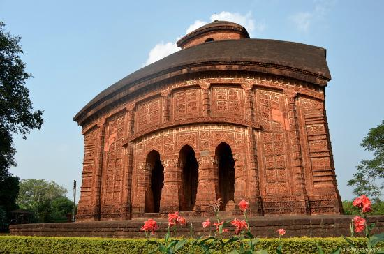
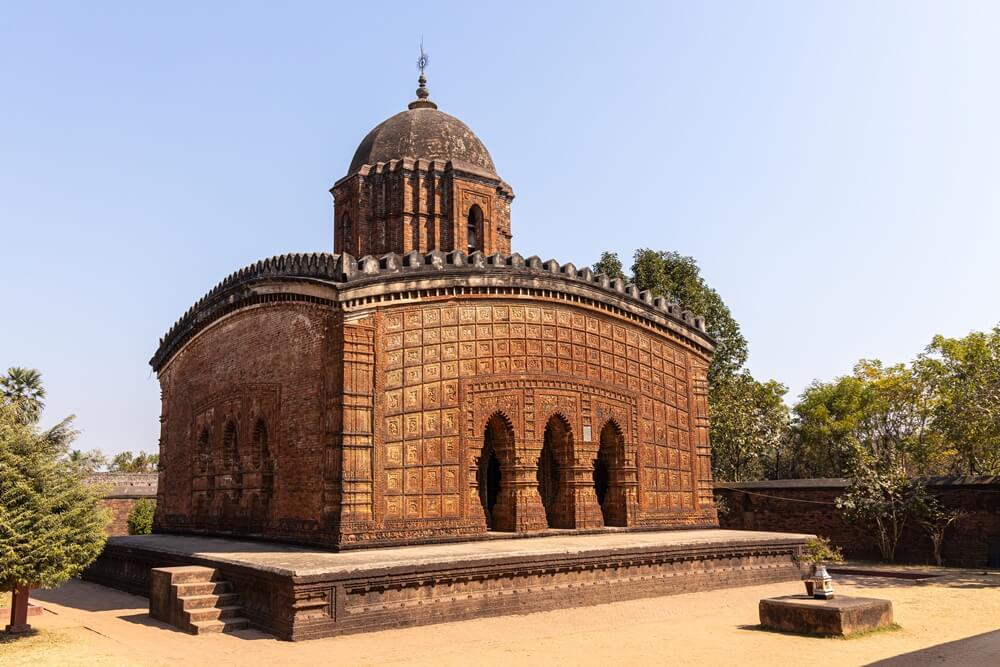
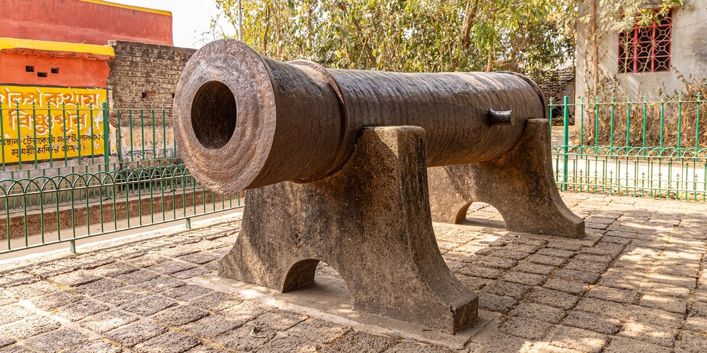

Built by King Bir Hambir in 1600 AD, Rasmanch is a unique pyramidal structure standing on a square raised plinth. It features 108 pillars and was historically used to display all the idols of Lord Krishna from the city during the grand Ras festival.

Jor Bangla Temple
Established in 1655 by King Raghunath Singha, this temple is famous for its 'Do-Chala' (twin hut) style. The walls are a masterpiece of terracotta art, intricately carved with scenes from the Ramayana, Mahabharata, and the daily lives of the Malla kings.

Built in 1643, this 'Pancha-Ratna' (five towers) temple is dedicated to Lord Krishna. It is world-renowned for its circular terracotta panels, especially the 'Ras-Chakra', which depicts the divine dance of Krishna and the Gopis in stunning detail.

Madan Mohan Temple

Souvenirs & Crafts
- Bishnupur is the cradle of the only classical music gharana in West Bengal. Established under the royal patronage of Malla Kings, it is famous for its Dhrupad style and has produced legendary musicians over centuries.
- The unique 'Dashavatar Taas' are hand-painted circular playing cards depicting the ten incarnations of Lord Vishnu. Created by traditional artists using cloth and natural colors, these cards are a rare folk art treasure.
- No visit to Bishnupur is complete without tasting the famous 'Bishnupuri Pera'. These delicious milk-based sweets are known for their authentic taste and are often offered as 'Prasad' in the historic temples.
- Historically, Bishnupur was a major hub for the lantern-making industry. Even today, you can find finely crafted traditional metal lanterns that reflect the town's old-world charm.
- Historically, Bishnupur was a major hub for the lantern-making industry. Even today, you can find finely crafted traditional metal lanterns that reflect the town's old-world charm.
- Historically, Bishnupur was a major hub for the lantern-making industry. Even today, you can find finely crafted traditional metal lanterns that reflect the town's old-world charm.
- A treat for food lovers, 'Posto-er Bora' (Poppy seed fritters) is a local delicacy. It is a must-try dish that represents the authentic flavors of the Bankura district.
- The signature saree of Bishnupur, featuring silk borders and pallus woven with stories from the Ramayana and Mahabharata. It is a masterpiece of storytelling through silk.
- Bishnupuri Pera: "A heavenly milk-based sweet, famous for its rich taste and traditional preparation. It is the most popular souvenir for food lovers.
- Posto-er Bora: "A unique local delicacy made of poppy seed paste, fried to perfection. It represents the authentic rural flavors of the Bankura district.
- Mecha Sandesh: "Another hidden gem of the region, this sweet is made from gram flour and sugar, offering a crunchy yet melting experience.
- Mrinmayee Mata Puja (Gurja puga): Established in 994 AD, the Durga Puja at Mrinmayee Temple is a royal tradition of the Malla kings. It is famous for its unique rituals, such as the firing of a cannon (Dalmadal) to mark the beginning of 'Sandhi Puja' and the worship of the sacred 'Ghat'
- Bishnupur Mela: Held every year in late December, this fair is a grand celebration of local handicrafts, music, and the glorious heritage of the Malla Kings.
- Jhapan Utsav: A unique folk festival dedicated to Goddess Manasa, celebrated in mid-August, showcasing the ancient traditions of the region.
- Ras Utsav: The Ras Festival is a grand celebration held during the full moon of Kartik (November). Historically, all the idols from the town's temples were brought to the 108-pillar Rasmanch for public worship, accompanied by traditional 'Kirtans' and folk dances.
- Holi / Dol Jatra: Dol Jatra in Bishnupur is a vibrant celebration of the divine love of Radha and Krishna. The temples are decorated, and devotees play with 'Abir' (dry colors) while singing classical 'Dhrupad' and 'Kirtan' songs that are unique to the Bishnupur Gharana.
- Poush Mela & Handicraft Fair: "Held every year in late December, the Bishnupur Mela is a 4-day grand carnival. It serves as a massive platform for local terracotta artists, Baluchari weavers, and folk musicians to showcase their talent to tourists from around the world.
- Best Time to Visit: October to March (When the weather is cool and the Bishnupur Mela is in full swing).
- Did You Know?: Bishnupur is the only place in Bengal with its own Classical Music Gharana!
- Pro Tip: Don't forget to hire a local guide near Rasmanch to hear the hidden stories of the Malla Kings